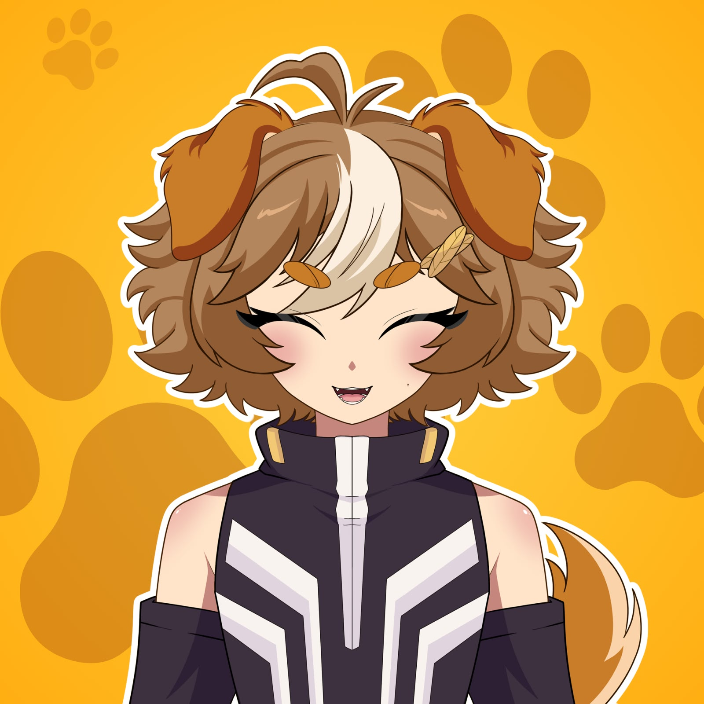

¡Bienvenido a mi página! Soy Antonpawprints, un VTuber cachorro que disfruta jugar videojuegos, crear contenido y compartir momentos con su comunidad. También soy un dibujante en proceso y streamer con un poquito de TDAH.
Aquí podrás conocerme mejor, descubrir mis dibujos, visitar mis redes sociales y encontrar mi servidor de Discord.
¡Échale un vistazo, cachorro!
